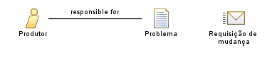

|
| Este tipo de usuário, além de poder consumir o conteúdo (já que se faz necessário uma análise do conteúdo para que sejam feitas alterações no mesmo), também tem a responsabilidade de alterar o conteúdo do sistema CMS. |
| Role Sets: Produtor |
|
Relationships
 |
| Additionally Performs |
|
Main Description
| O produtor, atua por demanda (quando requisitada por algum usuário consumidor/produtor) ou quando for verificada a
necessidade de mundanças, em conteúdo publicado de forma errada ou desatualizado. |
Key Considerations
| Este usuário só poderá alterar conteúdo do sistema, em sessões que o administrador forneceu permissões para
tal. Portanto, esse usuário não tem liberdade total de modificação de conteúdo, atuando assim, também, como um
consumidor. |
|